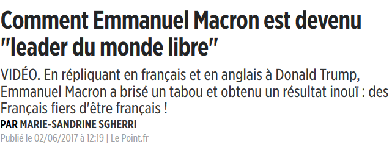
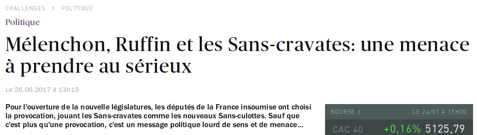
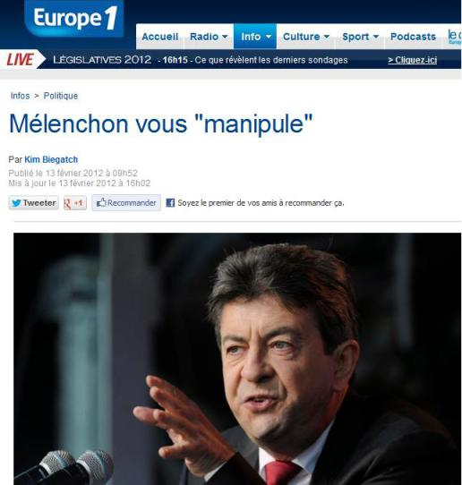

Le choix de la rédaction
Pour chacune des questions suivantes, trouvez le choix du journaliste
Alexandre Poplavsky dans l'Est Républicain le 25 janvier 2012 à propos de Jean-Luc Mélenchon : "Il ... ces déclarations à chacune de ses sorties"
- gerbe
Lire en effet cet article de l'OPIAM : "Selon trente trois journalistes, Mélenchon « éructe », « vomit », « gerbe », « aboie » et devrait « fermer sa gueule »".
Dans son article pour Europe 1 intitulé "Ce qu'il fallait retenir du passage de Jean-Luc Mélenchon à Des Paroles et Des Actes", quelle image le journaliste a-t-il voulu que le lecteur retienne ?
Pour illustrer des articles sur les débuts de Mélenchon à l'Assemblée Nationale, quelle image est la plus appropriée selon Le Point, Europe 1, Libération ?
Quelle image du discours de Mélenchon à Marseille en 2012 fallait-il retenir, selon Le Parisien, dans son article intitulé "Ce qu'il faut retenir du discours de Mélenchon à Marseille" ?
Pour les journalistes, Marine Le Pen (xénophobe, islamophobe, poujadiste) et Mélenchon (socialiste, humaniste, universaliste, écologiste) sont :
- jumeaux
- mariés
- en couple
- unis
- en tandem
- main dans la main
« Jean-Luc Mélenchon et Marine Le Pen unis pour saluer la crise politique en Grèce ». 28 décembre 2014, Alexandre Boudet, Huffington Post
« Marine Le Pen et Jean-Luc Mélenchon, les jumeaux de l’absentéisme ». 5 février 2014, Béatrice Houchard, L'Opinion
« Les mariés de l’an 2012 » (titre), « couple de l’année », en référence à Mélenchon et Le Pen. 30 décembre 2012, Mathieu Lindon, Libération.
« Parole de candidats décolle avec le tandem Le Pen-Mélenchon ». 6 mars 2012, Emmanuel Berretta, Le Point.
« Aujourd’hui franchement si vous regardez par exemple, il y a quelque chose d’intéressant c’est que, sur la Russie, Marine Le Pen et Jean-Luc Mélenchon marchent main dans la main. ». Piotr Smolar, 9 mai 2014, dans Arrêt sur images.
...Et bien d'autres exemples sur le site de l'OPIAM !
Pour Libération, assimiler Mélenchon à Hitler, Le Pen, Dieudonné, est-ce acceptable ?
- Acceptable
« La résistible ascension de Jean-Luc Mélenchon » (Alain Duhamel, Libération), référence à La résistible ascension d’Arturo Ui, pièce dans laquelle Arturo Ui représente Hitler.
En haut, une illustration dans Libération, mise en nuances de gris. En bas, les clichés d'Hoffmann.
« Marine Le Pen aboiera, Jean-Luc Mélenchon éructera » « Marine Le Pen pavoisera, Jean-Luc Mélenchon s’enfiévrera » (Alain Duhamel, Libération)
Mélenchon = Dieudonné dans LibérationÀ propos de Mélenchon, Stéphane Guillon écrivit dans Libération : « On évoque le syndrome Dieudonné, cet ancien humoriste, aujourd’hui révisionniste, abonné désormais aux jeux de mots nauséabonds »
Le petit cercle des médias
Quelques questions sur le monde homogène et fermé des journalistes
Quelle rédaction a écrit dans son journal : « Nous sommes de gauche, nous luttons contre les injustices, les abus de pouvoir » et « [nous sommes] pour l’heure l’honneur de la profession. » ?
Combien de journalistes de Libération ont pris la défense de leur collègue Pierre Marcelle quand celui-ci a démissionné après avoir été censuré quatre fois dans ce journal, dont une fois pour avoir pris la défense de Mélenchon ?
Yann Barthès (Quotidien) s'est vanté de ne pas avoir été augmenté lors de son arrivée sur TMC. Combien a-t-il gagné en 2016 ?
- environ 30 000 000 euros
Le Front National, un journaliste, ou les deux ?
Qui a dit : « Le Front National est devenu plus que tout autre le parti de quiconque se sent fragile ou menacé » ?
Qui a dit : « La rébellion ne se niche plus dans le vote rouge mais bleu marine » ?
- Un journaliste
Qui a employé l'expression « Français de fraîche date » ?
- Les deux
L'expression a été employée par la journaliste Christine Clerc (alors sur Europe 1) :
Dans un article de 1986 publié dans Le Figaro Magazine ou à la télévision (les sources varient), elle reproche à Henri Krasucki [ndla: résistant juif polonais] d'être un « Français de fraîche date » et peut-être de se montrer ingrat envers sa nouvelle patrie.
Elle a été également employée par Bruno Gollnisch contre Rihan Cypel (député PS d'origine brésilienne).
Qui a dit à propos d'Angela Merkel : « [...] ses propos ont créé un appel d’air tel que, face à l’afflux de migrants, elle a dû rétablir les frontières » ?
- Un journaliste
C'est le journaliste et directeur éditorial au Monde Arnaud Leparmentier qui l'a écrit, reprenant ainsi la thèse de l'extrême droite de l'"appel d'air".

Qui a été condamné plusieurs fois pour provocation à la haine ?
- Les deux
Le journaliste Éric Zemmour, qui s'est fait connaître du grand public grâce à Laurent Ruquier, a été condamné trois fois pour provocation à la haine, en ayant tenu, entre autres, les propos suivants sur le service public :
« Les soldats du djihad sont considérés par tous les musulmans comme des bons musulmans »
À titre de comparaison, Henry de Lesquen, l' ex patron de Radio Courtoisie raciste, antisémite et opposé à l'état de droit n'a été condamné qu'une fois pour ce délit.
En parallèle, bien sûr, plusieurs membres du FN ont été condamnés pour incitation à la haine, comme Jean-Marie Le Pen.
Ont-ils vraiment osé ?
Ils osent (presque) tout, c'est à ça qu'on les reconnaît. Pour chaque phrase, dites s'il s'agit d'un vrai titre ou d'un faux titre de presse.
« Maximilien Ilitch Mélenchon »
- Vrai titre
« Mélenchon, sans-culotte ou sans c... »
- Vrai titre
« Comment Emmanuel Macron est devenu "leader du monde libre" »
- Vrai titre
Il s'agit du titre d'un article du Point
« Mélenchon, Ruffin et les Sans-cravates: une menace à prendre au sérieux »
- Vrai titre
Il s'agit du titre d'un ">éditorial de Bruno Roger-Petit pour Challenges
.« Mélenchon vous "manipule" »
- Vrai titre
C'est le titre d'un article d'Europe 1
« Mélenchon convoqué par la justice dans l'affaire des Panama Papers »
- Vrai titre
Qui a dit...
Pour chacune des phrases suivantes, devinez qui l'a prononcée ou écrite !
« […] le Conseil des ministres et la Commission sont noyautés par des haut-fonctionnaires allemands […] »